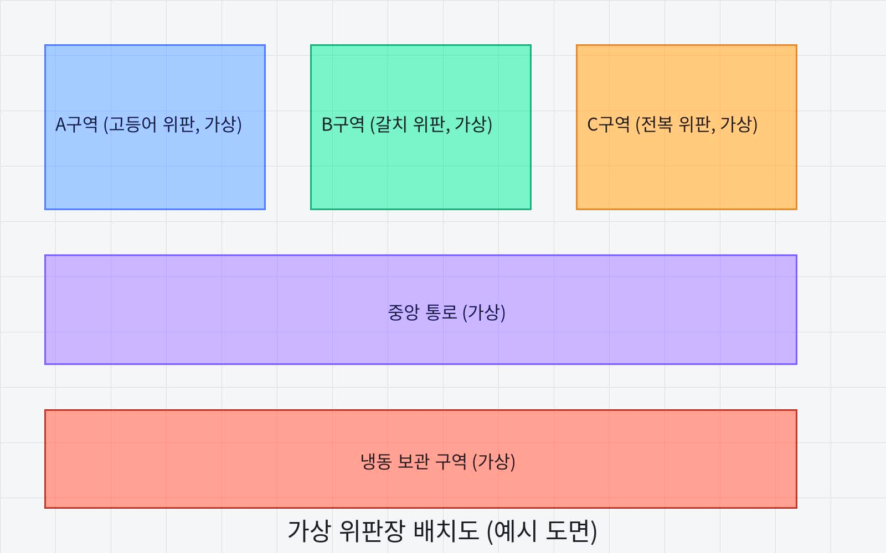

Panzoom(element, options) 한 줄로 드래그 패닝 + 핀치 줌이 자동으로 활성화됨zoomIn()/zoomOut()/zoom(scale)/reset()으로 프로그램에서 직접 제어zoomWithWheel을 휠 이벤트에 연결하면 마우스 휠로 확대·축소zoomToPoint(scale, point)로 특정 지점을 기준으로 확대 — 클릭한 자리가 화면 중심을 벗어나지 않고 그대로 확대됨panzoomchange 커스텀 이벤트로 현재 배율·이동값을 실시간 구독
const panzoom = Panzoom(elem, { maxScale: 5, minScale: 0.5 });
zoomInBtn.addEventListener('click', panzoom.zoomIn);
zoomOutBtn.addEventListener('click', panzoom.zoomOut);
resetBtn.addEventListener('click', panzoom.reset);
const panzoom = Panzoom(elem, { maxScale: 5, minScale: 0.5 });
wrapEl.addEventListener('wheel', panzoom.zoomWithWheel);
elem.addEventListener('dblclick', (event) => {
panzoom.zoomToPoint(2, event); // 클릭 지점을 중심으로 2배 확대
});
elem.addEventListener('panzoomchange', (event) => {
const { x, y, scale } = event.detail;
console.log(`배율 ${scale}, 이동 (${x}, ${y})`);
});